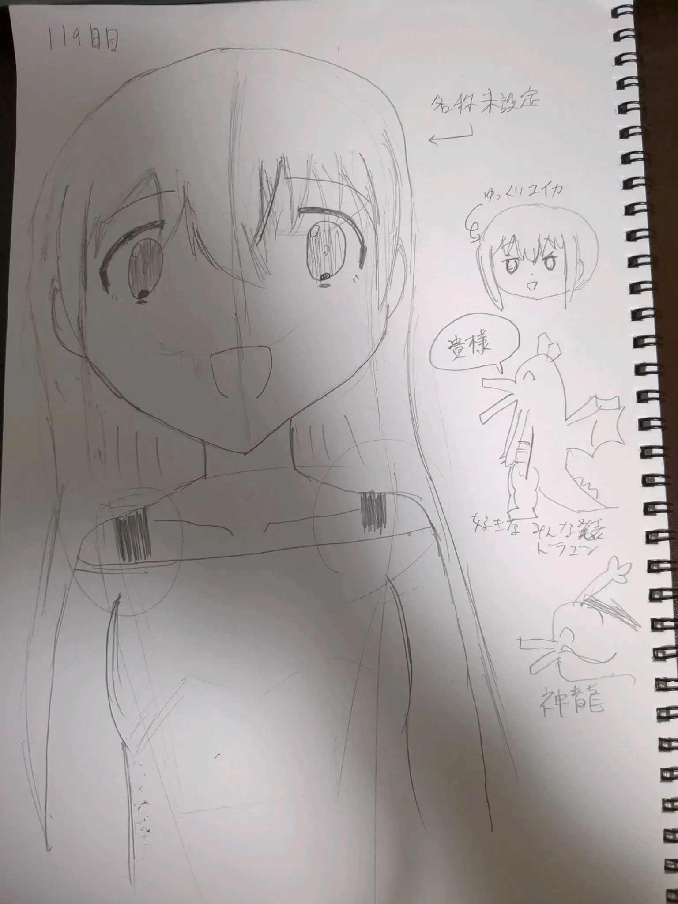

Mullvad Vpn
これまで私はインターネット接続にVPNを使用していなかったのですが（Tailscaleは用途が違う）、現在、Mullvad VPNを真面目に検討しています。
プライバシーと言論の自由を支持する立場の人間として、インターネットに接続するにはVPNを使用するのは必然と考えています。
あと、これを機にオンライン習慣を考えようと思います。クリックやタップを、銃を引くことと同じと考えたり。。。
すでに検索エンジンやブラウザは変えているため、多くは達成していますがね。
スマートフォンにはアプリをなるべくF-Droidから入れ、なるべく必要なものだけにしています。ソシャゲみたいなゲームとして売ってるだけの作業はやめた方がいいです。
ここだけの話ですが、ビッグテック系SNSの「「「表現の自由」」」を支持する人（いわゆる「表現の自由戦士」）の大部分のやってることが言論の自由に反するのはなぜでしょうね。。。
脱〇〇のコーナー Link to heading
- 脱X 30日目
- 脱YouTube 0日目 （リセット、最高記録8日）
- 脱AI 0日目 （リセット）
ついに脱Xから1ヶ月！！もうXに思い残すことはありません。
勉強のコーナー Link to heading
毎日連続勉強 2日目。映像授業を見て後、、、何もしてない。
プログラミングのコーナー Link to heading
やってすらない。
お絵描きのコーナー Link to heading
117日目。

いろいろコーナー Link to heading
これまで午後にいろいろやりがちでしたが、頑張って早起きして午前にいろいろやった方がいい気がしてきた。
カレンダーや連絡先の同期にEtesyncを検討していましたが、これは長らく更新されていないので、代替を探していたところ、Radicaleというものを発見しました。週末に入れます。